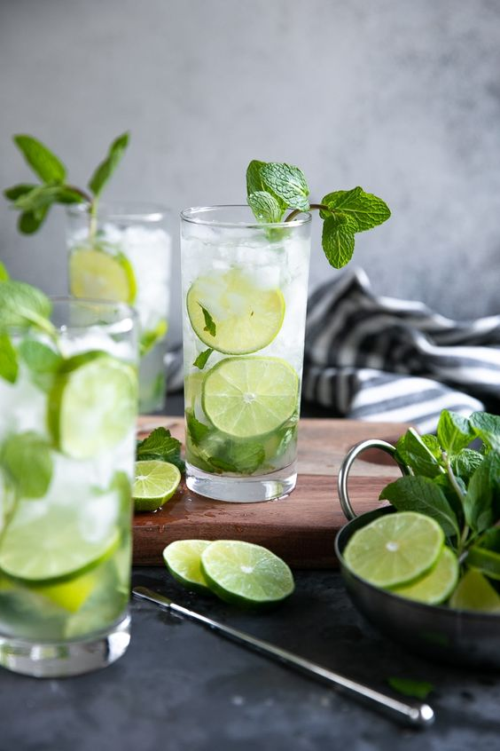

RECEPT VOOR DE LEKKERSTE MOJITO
stappen voor een heerlijke Moijto

Benodigheden voor Mojito
- Een groot glas bruiswater
- 2 of 3 ijsblokjes
- Verse munt
- Een scheutje Bacardi
- Sap van een halve limoen
- 1/2 lepel rietsuiker
Hoe doorloop ik deze stappen?
- Gebruik voor deze cocktail een stevig glas met stevige onderkant om in te muddlen (stampen). Je moet namelijk goed muddlen om alle smaken te mengen, belangrijk dat je hier een goed glas voor hebt.
Zet ook al vast een vol glas met crushed ice klaar.
- Begin eerst met 3 barlepels rietsuiker en de limoenpartjes (in kwartjes) in het glas te doen.
- Nu pak je de muntblaadjes. Voor je deze in het glas doet sla je deze in de palm van je hand. Je ruikt meteen het aroma dat vrij komt.
- Hierna neem je 4-5 muntblaadjes die je in het glas doet. Smeer ook de rand van je glas in met munt zodat je ook hier extra muntsmaak krijgt.
Geniet ervan!